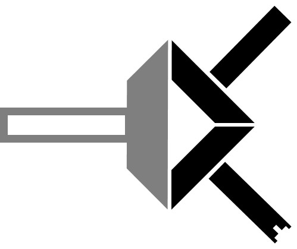

<!DOCTYPE html>

<html lang="en">
    <head>
        <meta name="viewport" content="width=device-width, initial-scale=1.0">
        <link rel="stylesheet" href="styles.css">
        <link rel="stylesheet" href="https://stackpath.bootstrapcdn.com/bootstrap/4.1.3/css/bootstrap.min.css">
        <!--setup Google icon fonts via Google Web Fonts: https://google.github.io/material-design-icons/-->
        <link rel="stylesheet" href="https://fonts.googleapis.com/icon?family=Material+Icons">
        <title>TTText.analyzer</title>
        <script src="code_index.js"></script>
    </head>
    <body>
        <div class="homepage-content flex-footer">
            <br>
            
            <h1><b>T</b>otal<b>T</b>ext<b>T</b>ools</h1>
            <p class="slogan">the.ultimate.text.analysis.kit <br> period.</p>
            <br>
            <div class="homepage-grid">
                <textarea class="text-box" id="string" name="text" placeholder="type/paste text here" cols="50" rows="5"></textarea><br>
                <div class="row-flex">
                    <input class="submit-button" type="submit" value="analyze"
                    onclick="saveText(); saveFilters(); warning(); gotoResults()">
                    <div id="i" onclick="info()">
                        &nbsp;
                        <!--icons "info circle" from Bootstrap Icons: https://icons.getbootstrap.com/-->
                        <svg id="i-clear" class="bi bi-info-circle" width="1em" height="1em" viewBox="0 0 16 16" fill="currentColor" xmlns="http://www.w3.org/2000/svg">
                            <path fill-rule="evenodd" d="M8 15A7 7 0 1 0 8 1a7 7 0 0 0 0 14zm0 1A8 8 0 1 0 8 0a8 8 0 0 0 0 16z"/>
                            <path d="M8.93 6.588l-2.29.287-.082.38.45.083c.294.07.352.176.288.469l-.738 3.468c-.194.897.105
                            1.319.808 1.319.545 0 1.178-.252 1.465-.598l.088-.416c-.2.176-.492.246-.686.246-.275 0-.375-.193-.304-.533L8.93 6.588z"/>
                            <circle cx="8" cy="4.5" r="1"/>
                        </svg>
                        <svg id="i-hov" class="bi bi-info-circle-fill" width="1em" height="1em" viewBox="0 0 16 16" fill="currentColor" xmlns="http://www.w3.org/2000/svg">
                            <path fill-rule="evenodd" d="M8 16A8 8 0 1 0 8 0a8 8 0 0 0 0 16zm.93-9.412l-2.29.287-.082.38.45.083c.294.07.352.176.288.469l-.738
                            3.468c-.194.897.105 1.319.808 1.319.545 0 1.178-.252 1.465-.598l.088-.416c-.2.176-.492.246-.686.246-.275 0-.375-.193-.304-.533L8.93
                            6.588zM8 5.5a1 1 0 1 0 0-2 1 1 0 0 0 0 2z"/>
                        </svg>
                    </div>
                </div>
                <!--icon "settings" from Google Material Icons Library: https://material.io/resources/icons/?style=baseline-->
                <button class="custom-button" onclick="saveFilters(); gotoFilters()"><i class="material-icons">settings</i></button>
            </div>
            <br>
            <div id="info-banner"></div>
        </div>
        <footer>
            <i>designed for</i> CS50 <i>by</i> <b>Endovic</b> 2020
        </footer>
    </body>
</html>
